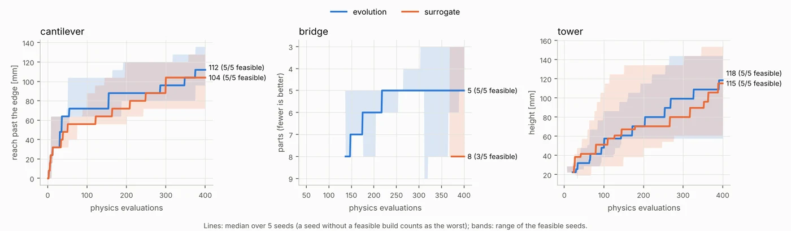

Construção de encaixe é um problema de engenharia com uma vantagem rara: a peça, a junta e a falha cabem numa conta de estática. O experimento usa isso para fechar o ciclo inteiro: construir, julgar, explicar por que caiu, construir de novo.
Os três objetivos
O maior balanço além da borda da mesa com 8 peças; uma ponte sobre 96 mm de vão que carregue 1 N com o menor número de peças; a torre mais alta que aguente um empurrão no topo. Em cada candidato, a estática rígida decide se fica de pé e, quando não fica, diz qual junta abriu ou onde o resultante saiu do apoio.
Os números
Balanço: 135,9 mm com 8 peças, com a tração de pico num pino em 0,333 N, 34% do limite de 0,98 N. Para comparar, um bloco só alcança 31,9 mm, a pilha harmônica clássica chega a 86,7 mm, e o limite do centro de massa é 255,2 mm.
Ponte: 3 peças carregando 1,462 N no meio do vão, 1,46 vez a carga pedida. Torre: 153,6 mm com 16 peças, aguentando 16,4 mN no topo, 1,64 vez o empurrão.

A checagem que decide
Antes de otimizar qualquer coisa, a física do modelo foi conferida contra nove formas fechadas: pilha harmônica, limite de tombamento de um bloco, balanço em um pino, empurrão em torre, reações de apoio e uma viga resolvida por FEA de voxels contra Timoshenko. Passaram as nove, com o FEA dentro de 0,4% de Timoshenko (0,0327 mm contra 0,0328 mm), e o relatório de confiança saiu aprovado, nota 1,00 com cobertura 1,00.

Onde os dois simuladores discordam
Cada candidato foi reproduzido num simulador de corpo rígido, com as juntas intactas. A concordância foi de 90% no balanço, 100% na ponte e 75% na torre. As discordâncias ensinam: no limite exato da pilha harmônica, o equilíbrio é neutro, a forma fechada diz que fica de pé e o simulador derruba, com o bloco do topo caindo 108,8 mm; a 0,99 do limite ele fica, a 1,01 cai.
O outro desvio é do solver, não do modelo: sob o empurrão sustentado de 10 mN na melhor torre, o atrito do integrador escorrega 0,23 mm com passo de 1 ms e 0,03 mm com passo de 0,25 ms. O escorregamento encolhe junto com o passo, então é artefato numérico, e está reportado como tal.
Busca: substituto contra evolução
Com 400 avaliações de física por execução e cinco sementes, a busca guiada por substituto não bateu a evolução simples em nenhum dos três objetivos: no balanço, mediana de 103,9 mm contra 111,9 mm; na ponte, 8 peças contra 5, e só 3 das 5 sementes chegaram a um resultado viável; na torre, 115,2 mm contra 118,4 mm. O melhor resultado absoluto da torre, 153,6 mm, veio do substituto, o que não compensa a mediana pior.
Por que isso vale como produto
O ciclo é o de qualquer projeto: gerar, julgar com física, explicar a falha, refinar. A diferença é que o julgamento é auditável, cada rejeição vem com o motivo e cada número vem junto do modelo de junta que o produziu.